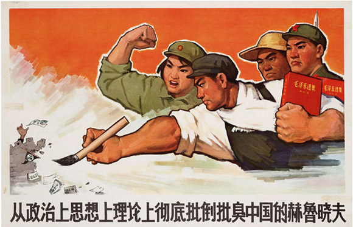
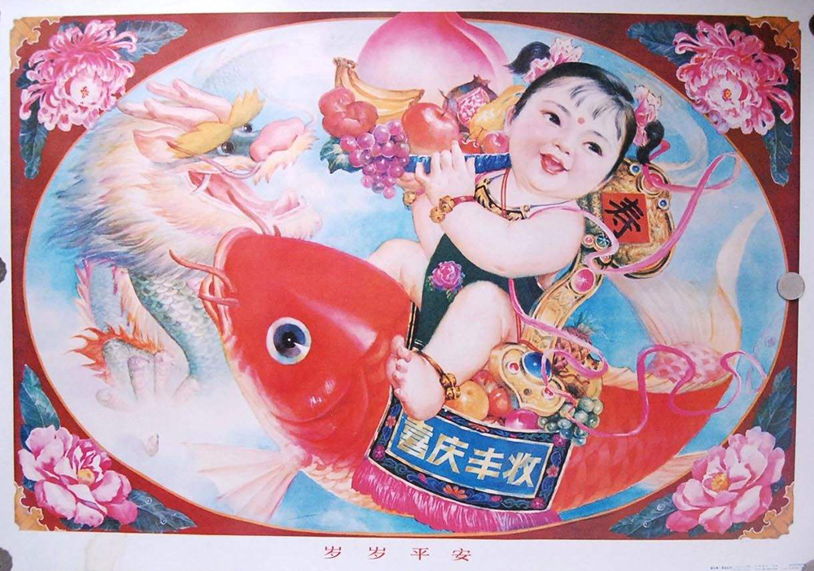

Role: art direction, graphic design, animation
Platform: weibo wechat
Getting together and enjoying the CCTV Spring Festival Gala has been an annual ritual for many Chinese families on Chinese New Year's Eve. In cooperation with 2017 Spring Festival Gala, our client Intel combined the choreography with Intel Core technology, creating stunning stage effects by manipulation of glowing gloves and glass balls. However, it is also admitted that the Spring Festival Gala has been losing appeal among the 80s and 90s
Contents including posters on social media were required before the gala. The goal was to regain more attention to the gala itself and facilitate the audience’s awareness of the role of Intel technology.
The posters were to deliver 3 messages: 1. Depict familiar Spring Festival activities like playing mahjong, eating dumplings and grabbing lucky money. 2. Include dancing elements. 3. Implicate Intel technology. Chinese propaganda poster visual style was recommended at first.
I understood the humor the reference trying to convey was the contrast between the serious political tone and new cyber enjoyments, whereas I had to abandon the culture revolution theme since politic-related elements should by all means be circumvented. At last I came up with a new style suggestion - the traditional chubby baby posters. Retaining the contrast of the old and the new, in comparison to the farmer，soldier, worker characters in propaganda posters, the chubby baby could serve better for the audience to identify with. Moreover, it was in better possession of festive air as the chubby bady was considered a symbol of luck.
I also suggested highlighting the dance moves by adding animation.
© 2017 Angie Lin All rights reserved